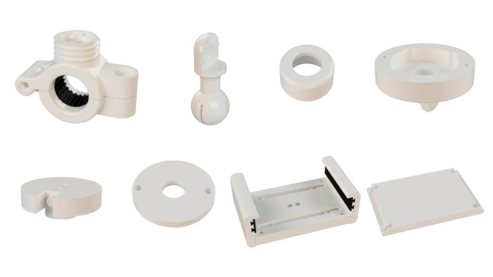

Bike Phone Mount Holder
Overview
This project focuses on the design and fabrication of a phone mount holder for a bike or scooter. The holder allows for quick attachment and secure rotation between portrait and landscape orientations without requiring tools. It incorporates a detent mechanism to provide tactile feedback for rotation and ensures the phone remains securely gripped while riding.
